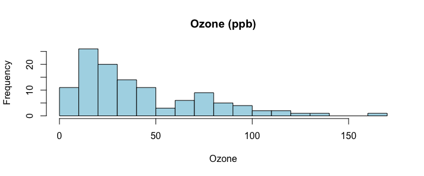
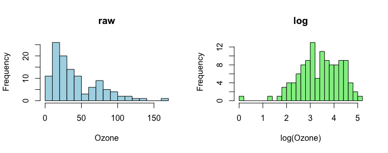

要約統計と歪み
ML の最初の一歩はデータの顔つきを知ることです。R の summary() は、最小・四分位・中央値・平均・最大を一度に出します（Python の describe() と同じ）。ここでは R に入っている実データ airquality（ニューヨークの大気データ）のオゾン濃度を使います。
x <- airquality$Ozone summary(x) sd(x, na.rm = TRUE)
平均（42.1）が中央値（31.5）より大きいことに注目してください。少数の高い値が平均を引き上げています。これが右に歪んだ分布です。歪みの大きさは歪度（skewness）で数値にできます（正なら右に裾が長い）。
skew <- function(x) { x <- x[!is.na(x)]; mean((x - mean(x))^3) / mean((x - mean(x))^2)^1.5 } skew(x) hist(x, breaks = 20, col = "lightblue", main = "Ozone (ppb)", xlab = "Ozone")

外れ値と対数変換
外れ値は、ほかの値から大きく離れた値です。550 で学んだ 1.5 × IQR ルールで、機械的に見つけられます。
q <- quantile(x, c(.25, .75), na.rm = TRUE) iqr <- unname(diff(q)) fence <- c(lower = unname(q[1]) - 1.5 * iqr, upper = unname(q[2]) + 1.5 * iqr) fence sum(x > fence["upper"], na.rm = TRUE) # how many outliers above the fence
外れ値が見つかったら、すぐ消さずに理由を考えます（入力ミスか、本当に珍しい日か）。ML では、次の対策がよく使われます。
| 対策 | いつ使う | R のコード |
|---|---|---|
| そのまま使う | 本物の値で、予測にも大事そう | — |
| 対数変換 | 右に歪んだ正の値（収入・価格・濃度） | log(x) / log1p(x) |
| 上限で切る（clip） | 極端な値だけ抑えたい | pmin(x, fence) |
| 取り除く | 明らかな入力ミス | x[x <= fence] |
対数変換すると、歪みがどれだけ直るかを確かめましょう。
oz <- airquality$Ozone round(c(before = skew(oz), after = skew(log(oz))), 2) par(mfrow = c(1, 2)) hist(oz, breaks = 20, col = "lightblue", main = "raw", xlab = "Ozone") hist(log(oz), breaks = 20, col = "lightgreen", main = "log", xlab = "log(Ozone)")

airquality$Solar.R について、1.5 × IQR ルールの上限（upper）を求め、それより大きい値の数を数えてください（欠損は無視）。
x <- airquality$Solar.R q <- quantile(x, c(.25, .75), na.rm = TRUE) iqr <- unname(diff(q)) upper <- unname(q[2]) + 1.5 * iqr upper sum(x > upper, na.rm = TRUE)
上限は Q3 + 1.5×IQR。na.rm = TRUE を忘れると NA になる。Solar.R はほぼ左右対称なので、上限を超える値はありません。
標準化（z スコア）
データの列は、単位も大きさもバラバラです（面積は 25〜120、価格は 100〜400）。距離を使うモデル（KNN、SVM、クラスタリング、正則化回帰）は、桁の大きい列だけで決まってしまうので、先に標準化します。式は 550 で学んだ z スコアそのものです。
set.seed(670) n <- 400 apt <- data.frame(area = round(runif(n, 25, 120)), rooms = sample(1:4, n, replace = TRUE, prob = c(.2, .4, .3, .1)), age = round(runif(n, 0, 50))) apt$price <- round(40 + 2.2 * apt$area + 12 * apt$rooms - 0.8 * apt$age + rnorm(n, 0, 25), 1) # 1000 USD set.seed(1) idx <- sample(n, size = 0.8 * n) train <- apt[idx, ] test <- apt[-idx, ] z_area <- (apt$area - mean(apt$area)) / sd(apt$area) round(c(mean = mean(z_area), sd = sd(z_area)), 3) head(round(scale(apt[, c("area", "price")]), 2), 4) # scale() does the same for every column
scaler.fit(X_train) のあと transform(X_test) と書きます。木のモデル（決定木・ランダムフォレスト）は、大小関係だけを見るので標準化は不要です。
airquality$Wind を標準化（z スコア）して、最初の 5 個を小数 2 桁で表示してください。
w <- airquality$Wind z <- (w - mean(w)) / sd(w) round(head(z, 5), 2)
scale(w) でも同じ値になる（行列で返る）。Wind に欠損はないので na.rm は不要。
欠損の扱い
現実のデータには空の所（NA）があります。多くの ML の関数は NA が入っているとエラーになるので、落とすか補う（補完）必要があります。
colSums(is.na(airquality)) # NA count per column nrow(airquality); nrow(na.omit(airquality)) # rows left if we drop every row with an NA
行を落とすと、データがかなり減ります（153 行 → 111 行）。そこで中央値で補う方法がよく使われます（歪んだ列では平均より安全）。
oz <- airquality$Ozone med <- median(oz, na.rm = TRUE) oz2 <- ifelse(is.na(oz), med, oz) round(c(mean_before = mean(oz, na.rm = TRUE), mean_after = mean(oz2), sd_before = sd(oz, na.rm = TRUE), sd_after = sd(oz2)), 2)
| 方法 | 長所 | 短所 |
|---|---|---|
| 行を落とす（na.omit） | 簡単。嘘が入らない | データが減る。欠損に偏りがあると結果も偏る |
| 中央値で補う | データが減らない。外れ値に強い | SD が小さくなる |
| 平均で補う | 簡単 | 外れ値・歪みに弱い |